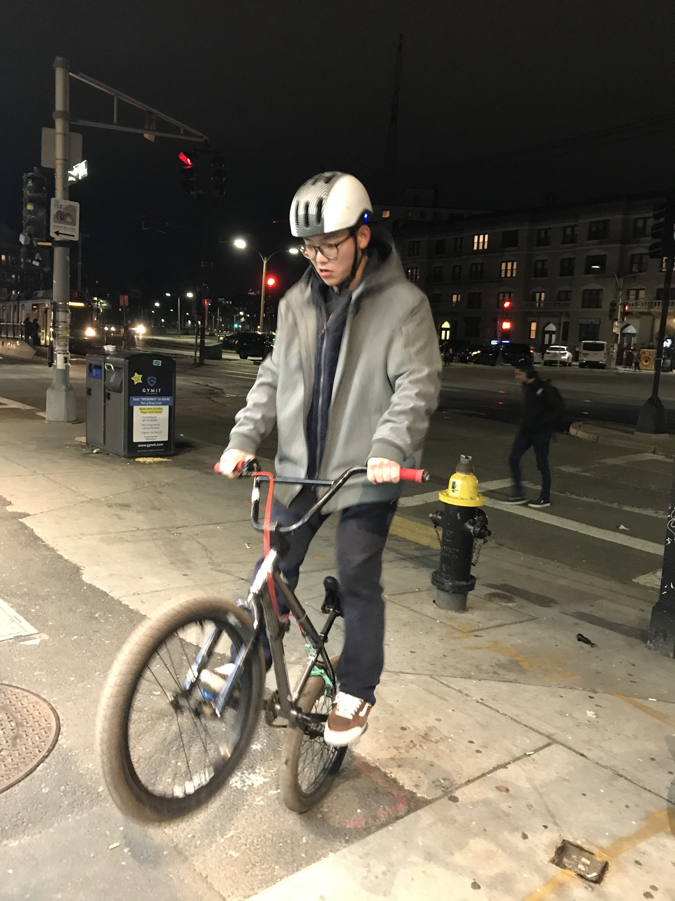
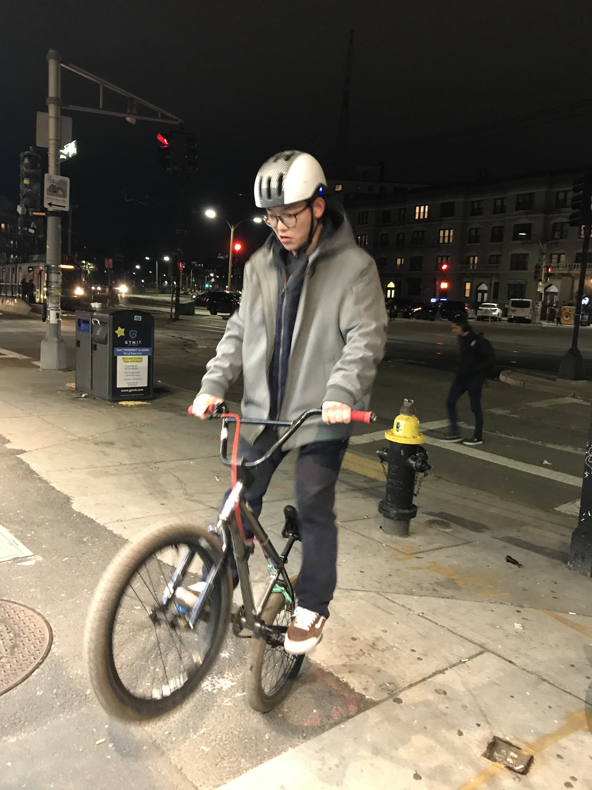

Shuo
Shuo. 7th semester, studying Pro music and jazz composition. Play drum set as principle instruments. Shuo is the romantic.
<<<<<<< HEAD ShuoLiu's websiteWe love music
Doing homework
We are berklee student. We are doing programing assignment. Our professor’s name is Rachel Rome. The name of our lesson is Online Intro to Programming.
Shuo
Shuo. 7th semester, studying Pro music and jazz composition. Play drum set as principle instruments. Shuo is the romantic.
<<<<<<< HEAD ShuoLiu's websiteDiana

Diana is Diana
Devin
Devin Min
Guitar, 25keys MIDI Keyboard (3 hours ago - Present)
Devin Min is technically a guitarist of “Bandname” since the html session 3 hours ago. Min used to work toward specializing in jazz guitar, but he soon switched his mind to EPD after a month at Berklee college of music.
He has been a member of his high school big band for 2 years. His interest these days is writing for media and games, he was lucky to take part in his first indie game scoring gig which will be released early next year.
Min’s favorite artists include Madeon, Snail’s house, Anomalie, Chris Larkin, Lena Raine and many more.